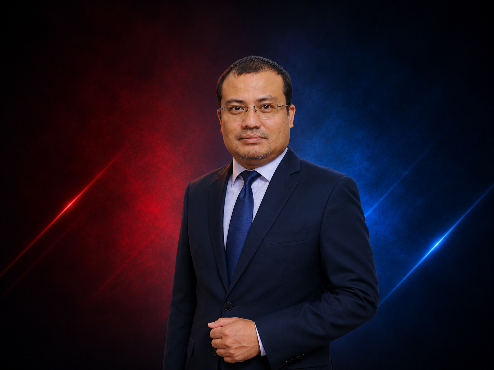

01 / 16Mohd Rasydi Abd Rashid
Risk & Compliance Advisory
Seasoned risk officer with 19 years spanning Islamic finance, insurance, and capital markets. Helps boards institutionalise robust enterprise risk frameworks aligned with BNM and SC guidelines.
Enterprise Risk Management
Regulatory Compliance
Islamic Finance Governance